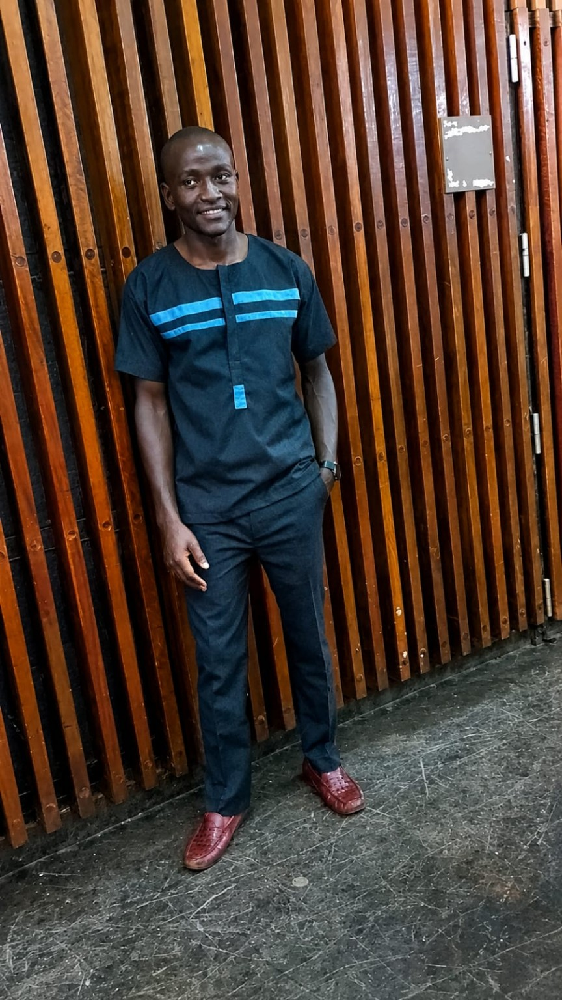
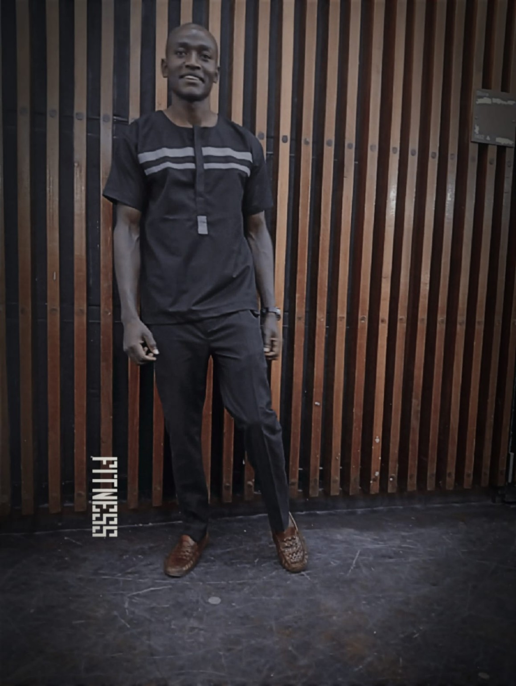
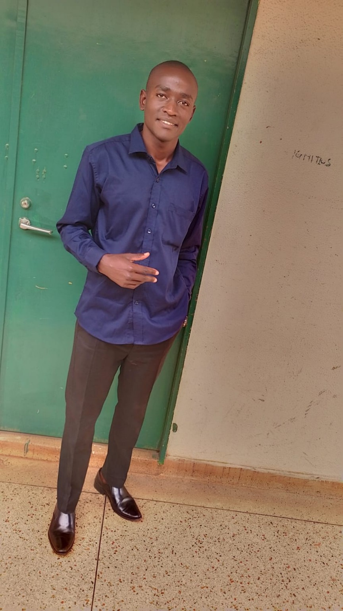
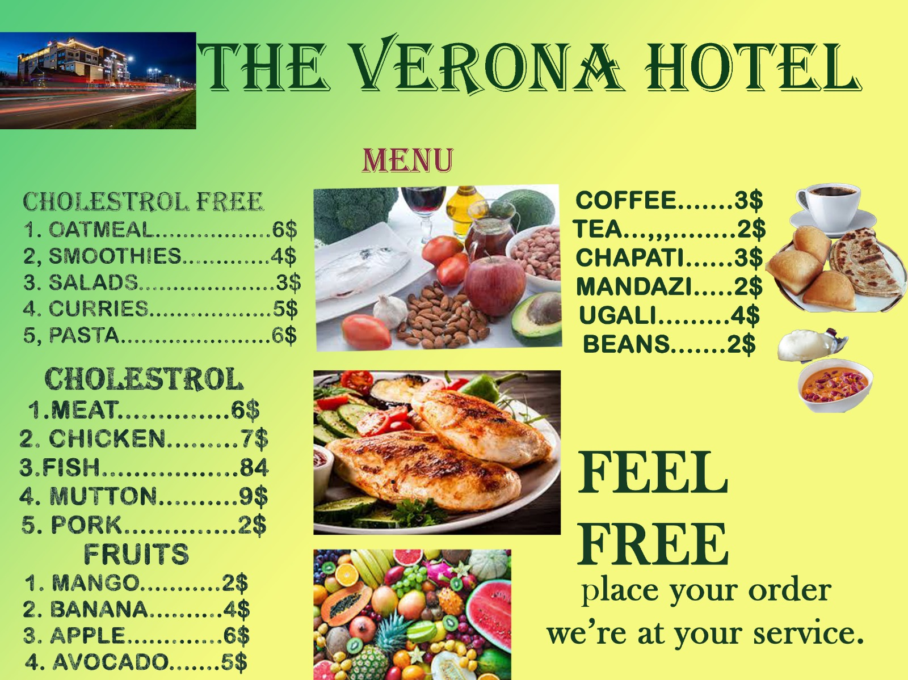
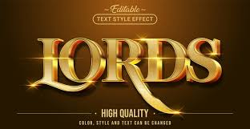

01 · Networks
Computer Networking
Network configuration, connectivity, troubleshooting, and security fundamentals.
I am Julius Cergrahm, a Computer Science student passionate about networking, web development, programming, graphic design, operating systems, and practical IT solutions.
I am dedicated to exploring technology, developing innovative digital solutions, and expanding my knowledge of modern computing systems. I enjoy turning what I learn into useful, reliable, and user-friendly results.
More About Me


Combining creativity, technical understanding, and continuous learning.
Network configuration, connectivity, troubleshooting, and security fundamentals.
Responsive websites and interactive applications using HTML, CSS, JavaScript, PHP, and MySQL.
Programming, operating systems, computer management, laptop installation, and maintenance.
Design, digital communication, and practical technology work.
Promotional event artwork with a bold gold-and-black worship theme.

A colourful menu layout presenting food and beverage selections.

Gold lettering and visual styling for a premium display effect.